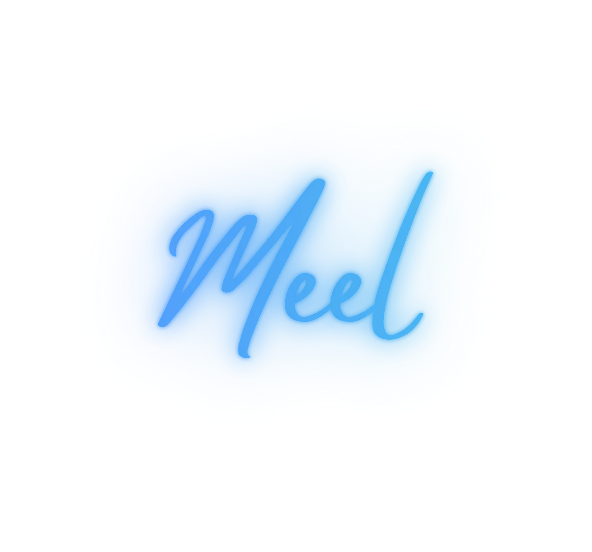
Smart Wellness Platform
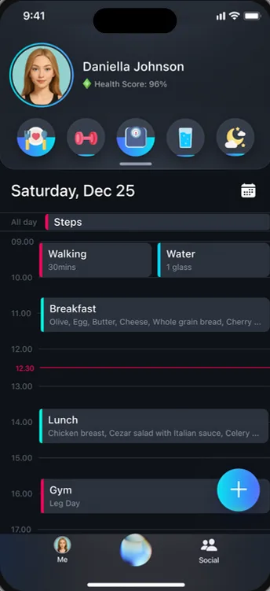
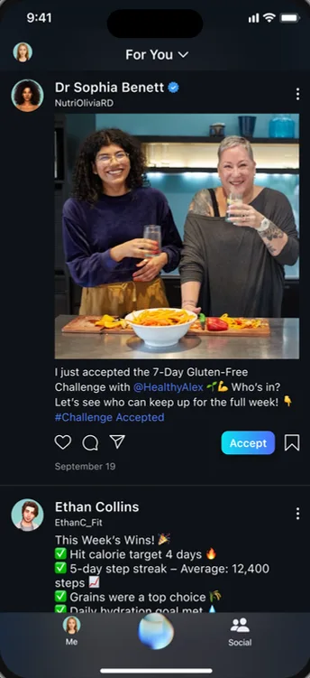
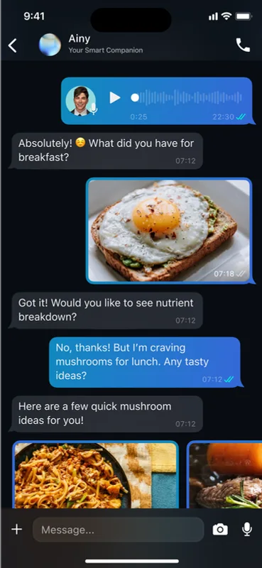
Meel is a next-gen wellness platform that brings planning, AI guidance, personalization, and social support into one adaptive experience, helping people build healthier habits that last.
What’s the problem?
Wellness apps, tips, and tools are everywhere, yet people still struggle to stay consistent. What’s missing?
{{ s.text }}
How I build products
Three complementary frameworks, each covering a different part of the journey.
Finding the right problem by starting from people’s real needs, behaviors, and pain points.
Moving fast in short iterations, shipping, testing, and improving continuously.
Reducing waste by validating ideas early and growing through what we learn.
What we heard from users
To understand real-world struggles, I interviewed 8 individuals from our target audience. Clear patterns emerged across their experiences.
“{{ q.text }}”
Survey results
I surveyed 56 people to validate the patterns and quantify the insights.
{{ s.text }}
“Starting is easy. Staying consistent is the real challenge.”
I consulted with a licensed dietitian to gain a professional perspective on behavior change, long-term challenges, and gaps in existing nutrition tools.
Cutting through
the noise
The wellness space is crowded, with hundreds of apps solving similar problems. To focus the opportunity, I mapped key competitors and reviewed what works, what doesn’t, and where gaps remain.
AI-driven
User-driven
One-size
Tailored
The problem arises from a lack of key elements
Three people, three goals
I created three personas, each representing distinct goals, behaviors, and pain points to guide user-centered design decisions.
“{{ p.quote }}”
{{ p.text }}
She has a demanding desk job with long hours and a sedentary routine. Despite losing some weight with a dietitian’s help, she still feels far from her goal and finds the process emotionally challenging.
From questions to concepts
Reframing the core problems as opportunities.
Divergent ideas generated for each opportunity.
Converged into the concepts that shaped Meel.
{{ t.text }}
RICE scoring
I led a team RICE session to evaluate possible features. Individual scoring helped me compare ideas objectively and prioritize high-value, low-effort solutions.
MoSCoW format
I used the MoSCoW method with the team to ensure clarity and alignment on what to focus on first.
Conduct a card sorting
I listed every feature as a card, then grouped them with users to shape an information architecture that matches how people think.
From initial flows to continuous improvement
Bringing Meel to life
A dark, calm interface where agenda, AI chat, tracking, and social features share one visual language.
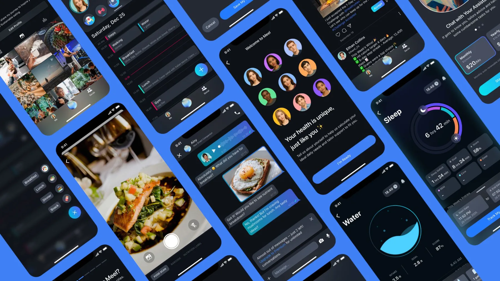
Introducing the AI assistant
A conversational assistant that tracks meals, sleep, and activity while giving smart feedback, motivation, and trend insights, reducing manual effort and keeping users engaged.
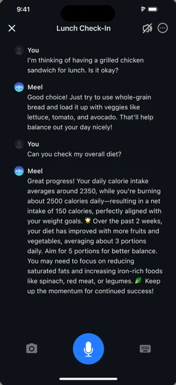
Testing the AI assistant in action
found the AI chat easier to use than traditional logging methods.
Some users felt the interaction was too robotic and lacked warmth. They were seeking something that felt more like chatting.
Refining based on user feedback
I redesigned the chat interface with visual and behavioral cues. Voice replies, talking mode, photo sharing, and personalization turned the assistant into a more human-like companion.
A taste of premium before commitment
New users get a limited number of free AI messages before hitting the premium gate, enough to experience the value before committing.
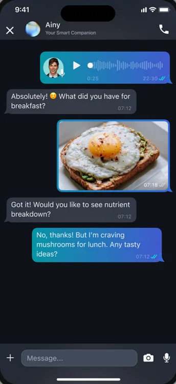
Upgrade to Premium for unlimited conversations. ✕
An agenda to boost wellness organization
A dynamic agenda that adapts to your health data, integrating meals, activity, water, and sleep into one personalized daily timeline.
said the timeline made daily tracking easier to manage.
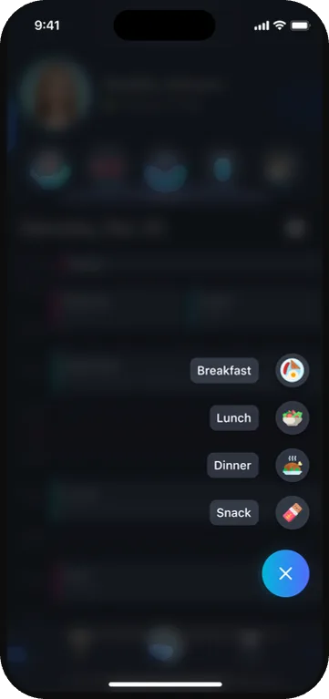
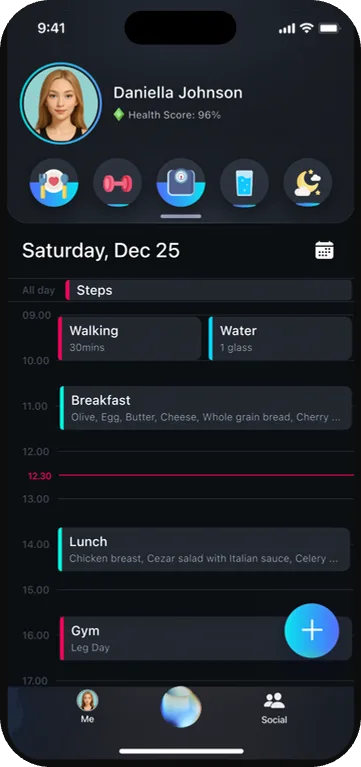
Gamification through a playful digital twin
Users create a dynamic AI Twin that reacts in real time to needs like hunger, thirst or low energy.
This avatar makes progress instantly visible and emotionally rewarding, turning health into a personal, playful and motivating experience.
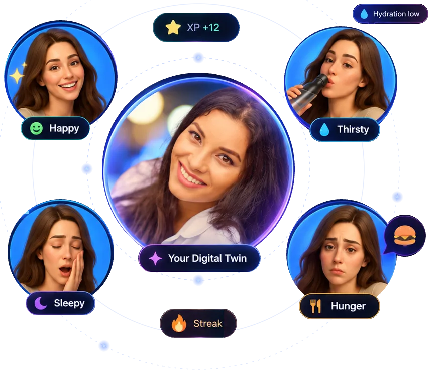
Responds to your activity, meals, water and sleep.
Friendly reminders when you’re thirsty, hungry or low energy.
XP, streaks and visual feedback keep you motivated.
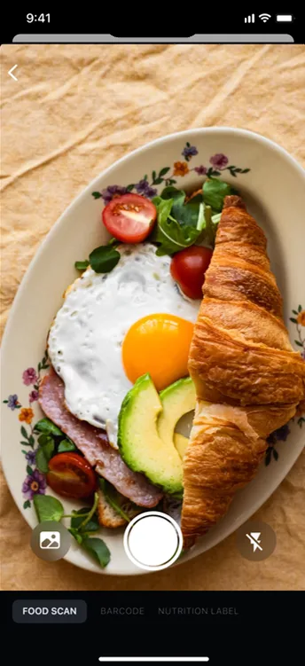
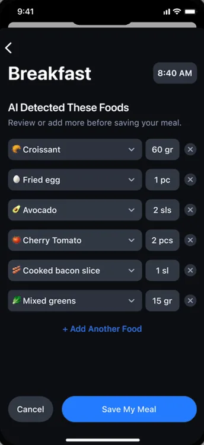
Capture first. Refine before saving.
Unlike competitors, the experience combines camera and voice input with editable AI suggestions, keeping tracking fast while giving users control over accuracy.
From logging to meaningful feedback
Users could log meals, but struggled to understand whether they were making progress. I replaced confusing charts with clear, verbal insights tied to goals, and added daily summaries from the AI assistant to reinforce progress over time.
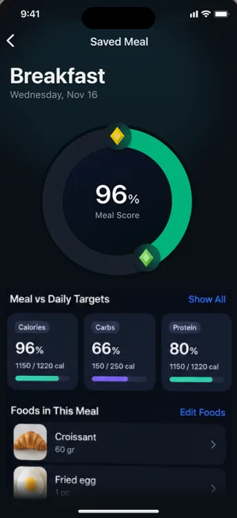
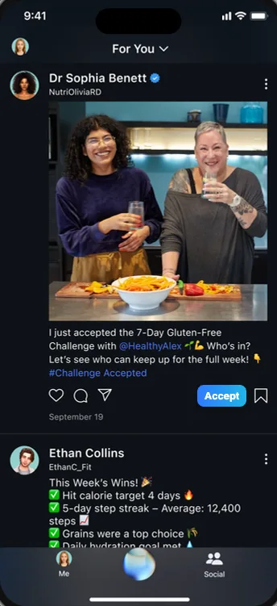
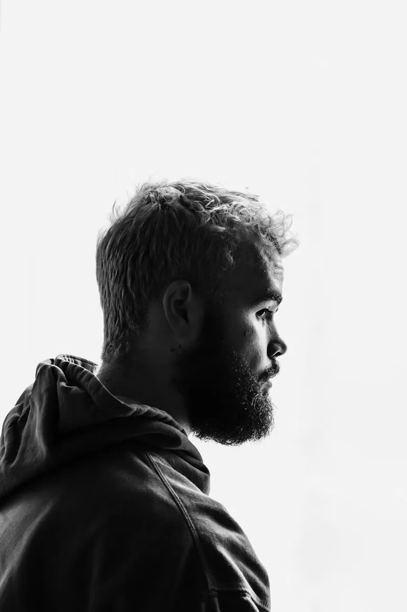
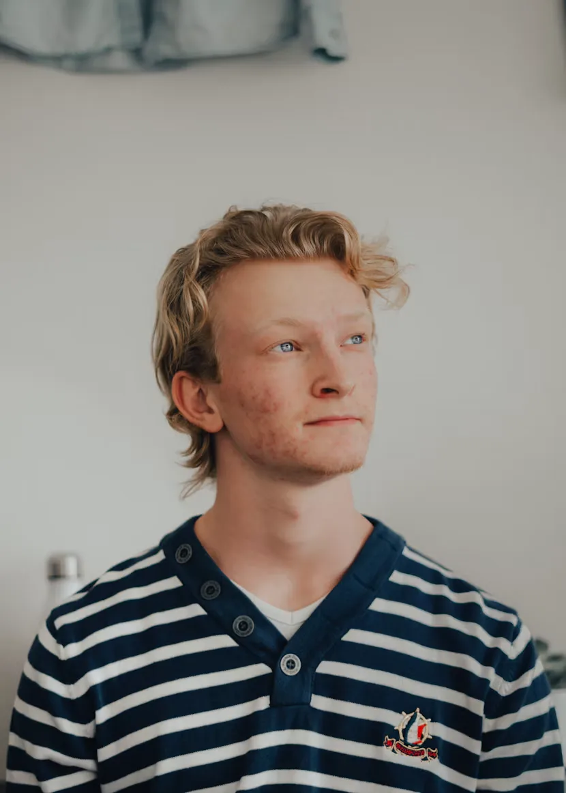
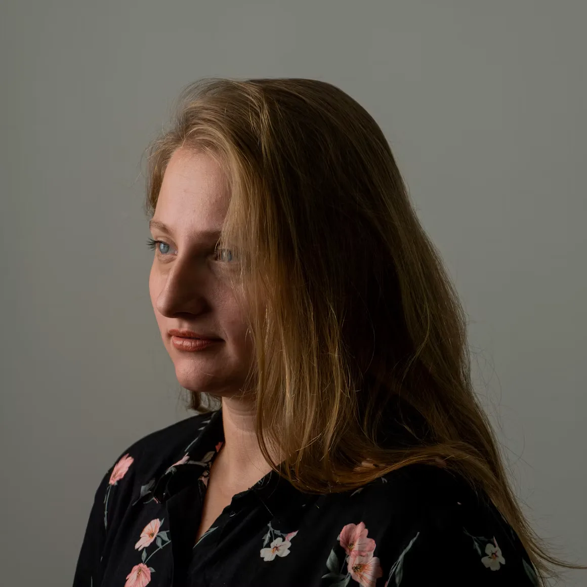
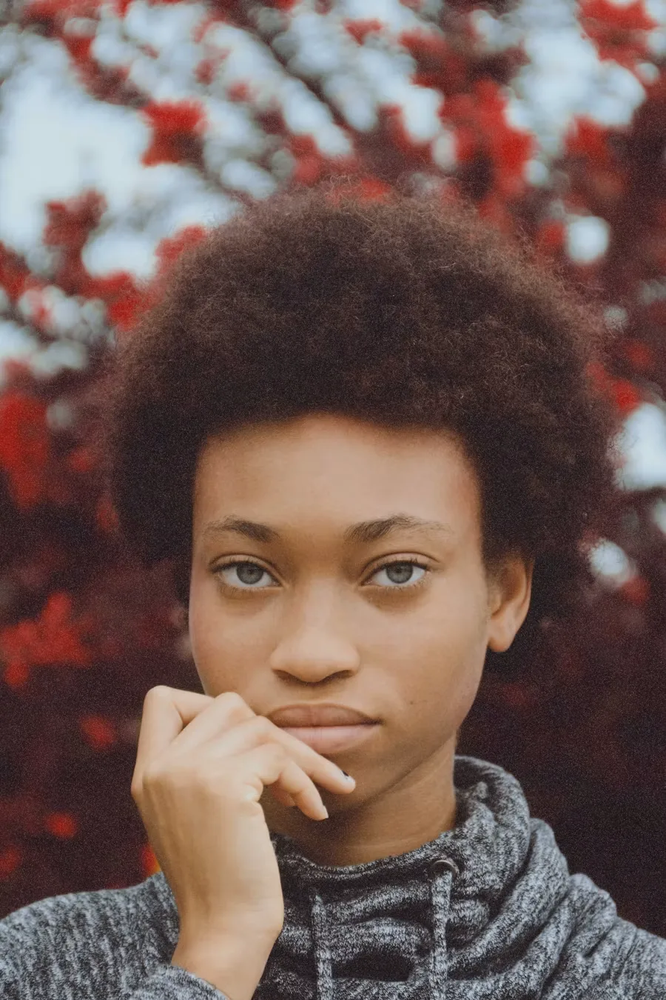
From solo tracking to shared momentum
Users can join challenges, celebrate milestones, and share progress with others, turning individual wellness into a more motivating social experience.